유통관리사-2급 (2017-07-02 기출문제)
1과목: 유통물류일반
1. 물류시스템에 관련된 주요 의사결정 사항과 가장 거리가 먼 것은?
- 주문을 어떻게 처리해야 하는가?
- 제품을 어디에 보관해야 하는가?
- 어느 정도의 물량을 보관해야 하는가?
- 제품을 어떻게 보관해야 하는가?
- 어떤 상품구색을 갖출 것인가?
(정답률: 79%)

2. 소매업태 발전에 관한 이론 중 다음 내용에 해당하는 것은?
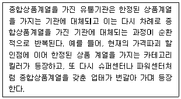
- 아코디언이론
- 소매차륜이론
- 변증법적이론
- 진공지대이론
- 소매수명주기이론
(정답률: 54%)
3. 경로구성원들 중 누가 재고보유에 따른 위험을 감수하느냐에 의해 경로구조가 결정된다고 설명하는 유통경로구조 이론은?
- 지연-투기이론
- 기능위양이론
- 거래비용분석
- 경로선택기능모형
- 대리이론
(정답률: 72%)
4. 집약적 유통에 적합한 소비자 행동으로 올바르게 나열한 것은?
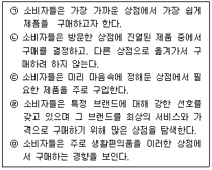
- ㉠, ㉡, ㉢
- ㉠, ㉢, ㉣
- ㉠, ㉡, ㉤
- ㉡, ㉢, ㉣
- ㉡, ㉢, ㉤
(정답률: 71%)
5. ( ) 안에 들어갈 적합한 용어는?
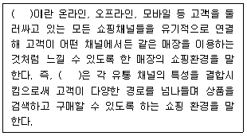
- 멀티채널(multi channel)
- 융합채널(convergence channel)
- 옴니채널(omni channel)
- 통합채널(integration channel)
- 플랫폼채널(platform channel)
(정답률: 84%)
6. 보관 효율화를 위한 기본원칙으로 옳지 않은 것은?
- 유사성의 원칙 : 유사품을 인접하여 보관하는 원칙이다.
- 중량특성의 원칙 : 물품의 중량에 따라 장소의 높고 낮음을 결정하는 원칙이다.
- 명료성의 원칙 : 시각적으로 보관물품을 용이하게 식별할 수 있도록 보관하는 원칙이다.
- 통로대면보관의 원칙 : 보관할 물품을 입출고 빈도에 따라 장소를 달리하여 보관하는 원칙이다.
- 위치표시의 원칙 : 보관물품의 장소와 랙 번호 등을 표시함으로써 보관업무 효율화를 기하는 원칙이다.
(정답률: 79%)
7. 개개 하역활동을 유기체 활동으로 보아 종합적으로 시스템화하여 그 시너지 효과까지 고려하는 원칙을 무엇이라 하는가?
- 활성화의 원칙
- 정보화의 원칙
- 시스템의 원칙
- 중력이용의 원칙
- 공간활용의 원칙
(정답률: 69%)
8. 다음에서 설명하는 수배송 공급모형은?
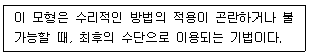
- 세이빙(Saving)법 모형
- 수배송선형계획법 모형
- 시뮬레이션(Simulation) 모형
- 최적화(Optimization) 모형
- 탐색적(Heuristic) 모형
(정답률: 61%)
9. 물류서비스를 거래전, 거래중, 거래후 요소로 구분할 때 거래전 요소에 해당하는 것은?
- 정시배달
- 주문충족률
- 제품의 대체
- 재고가용성
- 선적지연 여부
(정답률: 58%)
10. 전략과 연계하여 성과를 평가하기 위해 유통기업은 균형성과표(Balanced ScoreCard : BSC)를 활용하기도 한다. 다음 중 균형성과표에 관한 내용으로 옳지 않은 것은?
- 장기적 관점의 고객관계에 대한 평가를 포함한다.
- 기업의 학습과 성장 역량의 평가를 포함한다.
- 정성적 성과는 제외하고 정량적 성과만을 포함한다.
- 단기적 성과와 함께 장기적 성과를 포함한다.
- 공급사슬 프로세스의 성과 평가에 활용한다.
(정답률: 83%)
11. 수요예측에 관한 내용으로 옳지 않은 것은?
- 수요예측은 과거의 경험이나 인과관계가 미래에도 지속될 것이라고 가정한다.
- 개별품목에 대한 수요예측보다 품목집단에 대한 총괄수요예측이 더 정확하다.
- 완벽한 수요예측이란 거의 불가능하다.
- 예측대상기간이 길수록 예측의 정확도는 떨어진다.
- 델파이조사법, 패널조사법, 회귀분석법은 정성적 수요예측기법에 속한다.
(정답률: 44%)
12. 다음 내용에서 밑줄 친 이것에 해당하는 것은?
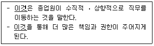
- 인력모집
- 직무순환
- 성과측정
- 승진
- 전직
(정답률: 78%)
13. 다음 글 상자 안의 A기업에서 주문 당 발생하는 주문비용은?
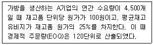
- 40원
- 112원
- 136원
- 967원
- 3,870원
(정답률: 31%)
14. 효과적인 종업원 평가시스템을 위해서는 '일을 잘하는 것이 무엇을 의미하는지' 분명히 정의되어야 한다. 이처럼 평가도구가 측정하고자 하는 것을 정확하게 측정할 수 있는지를 나타내는 용어는?
- 전략적 적합성(strategic congruence)
- 타당성(validity)
- 신뢰성(reliabilty)
- 수용성(acceptability)
- 구체성(specificity)
(정답률: 42%)
15. ( ) 안에 들어갈 수 있는 용어로 옳지 않은 것은?
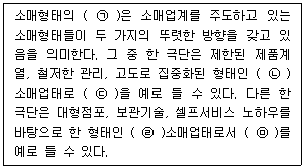
- ㉠ 양극화 현상
- ㉡ 하이터치(high touch)형
- ㉢ 편의점
- ㉣ 하이테크(high tech)형
- ㉤ 대형할인마트
(정답률: 64%)
16. 다음 글 상자의 ㉠, ㉡에 해당하는 윤리관을 순서대로 올바르게 나열한 것은?
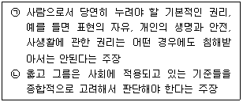
- ㉠ 공리주의, ㉡ 권리우선주의
- ㉠ 공정성주의, ㉡ 사회계약주의
- ㉠ 사회계약주의, ㉡ 공리주의
- ㉠ 권리우선주의, ㉡ 사회계약주의
- ㉠ 공리주의, ㉡ 공정성주의
(정답률: 68%)
17. 생산, 판매, 구매, 인사, 재무, 물류 등 기업업무 전반을 통합관리하는 경영정보시스템을 의미하는 것으로, 모든 정보가 발생시점에서 실시간으로 데이터베이스화되고 각 부서가 공유할 수 있도록 하는 것은?
- MIS(Management Information System)
- SCM(Supply Chain Management)
- ERP(Enterprise Resource Planning)
- MRP(Material Resource Planning)
- BPR(Business Process Reengineering)
(정답률: 55%)
18. 종업원 동기부여 이론에 관한 내용으로 옳은 것은?
- 욕구단계이론에서는 생리적, 안전, 사회적, 존경, 자아실현의 욕구가 존재한다고 가정했다.
- 욕구단계이론에서 생리적, 안전욕구는 고차원적 욕구에 그리고 사회적, 존경, 자아실현 욕구는 저차원적 욕구에 포함된다.
- XY이론에서 긍정적인 관점을 X, 부정적인 관점을 Y로 구분했다.
- 2요인이론은 동기부여-위생이론을 말하는 것으로 매슬로우에 의해 제시되었다.
- 2요인이론에서는 동기부여를 하려면 위생요인 즉 승진, 개인성장의 기회, 인정, 책임, 성취감과 관련된 요인을 강화하도록 주장하였다.
(정답률: 65%)
19. ( ) 안에 들어갈 용어로 올바르게 짝지어진 것은?
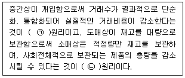
- ㉠ 분업, ㉡ 집중준비
- ㉠ 변동비 최소, ㉡ 분업
- ㉠ 총거래수 최대, ㉡ 분업
- ㉠ 분업, ㉡ 변동비 우위
- ㉠ 총거래수 최소, ㉡ 집중준비
(정답률: 69%)
20. 소비자 기본법에서 규정하는 사업자의 책무 사항으로 옳지 않은 것은?
- 사업자는 스스로의 권익을 증진하기 위하여 필요한 지식과 정보를 습득하도록 노력하여야 한다.
- 사업자는 물품 등을 공급함에 있어서 소비자의 합리적인 선택이나 이익을 침해할 우려가 있는 거래조건이나 거래방법을 사용하여서는 아니 된다.
- 사업자는 소비자에게 물품 등에 대한 정보를 성실하고 정확하게 제공하여야 한다.
- 사업자는 소비자의 개인정보가 분실·도난·누출·변조 또는 훼손되지 아니하도록 그 개인정보를 성실하게 취급하여야 한다.
- 사업자는 물품 등의 하자로 인한 소비자의 불만이나 피해를 해결하거나 보상하여야 하며, 채무불이행 등으로 인한 소비자의 손해를 배상하여야 한다.
(정답률: 65%)
21. 전자상거래 및 통신판매 등에 의한 재화 또는 용역의 공정한 거래에 관한 사항을 규정함으로써 소비자의 권익을 보호하고 시장의 신뢰도를 높여 국민경제의 건전한 발전에 이바지함을 목적으로 하는 법은?
- 전자문서 및 전자거래기본법
- 할부거래에 관한 법률
- 전자상거래 등에서의 소비자보호에 관한 법률
- 유통산업발전법
- 정보통신망 이용촉진 및 정보보호 등에 관한 법률
(정답률: 76%)
22. 물류시설 중에서 '항만 및 내륙운송수단의 연계가 편리한 산업단지 지역에 위치하여 컨테이너 집화, 혼재를 위한 하치장을 말하며, 컨테이너 장치, 보관기능, 집화, 분류기능 및 통관기능을 담당' 하는 시설물은?
- CY(Container Yard)
- 내륙컨테이너기지(ICD)
- CFS(Container Freight Station)
- 창고
- 유통단지
(정답률: 46%)
23. 체인스토어 경영에 대한 설명으로 옳은 것을 모두 고르면?
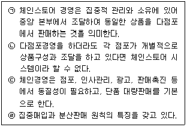
- ㉠, ㉡
- ㉠, ㉢
- ㉡, ㉢
- ㉡, ㉢, ㉣
- ㉠, ㉡, ㉢, ㉣
(정답률: 61%)
24. 기업의 물류관리와 공급사슬관리에 대한 설명으로 옳지 않은 것은?
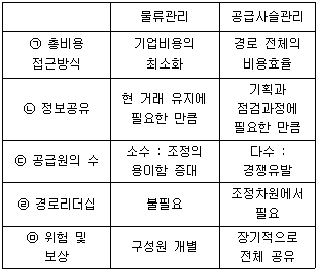
- ㉠
- ㉡
- ㉢
- ㉣
- ㉤
(정답률: 52%)
25. 다음 글 상자의 사례에서 B사와 D사가 가진 유통경로에서의 힘은?
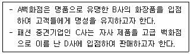
- 보상력(reward power)
- 합법력(legitimate power)
- 강제력(coercive power)
- 전문력(expert power)
- 준거력(referent power)
(정답률: 72%)
2과목: 상권분석
26. 점포의 입지결정을 내리기 위한 상권분석 기법 중에서 (㉠)과 (㉡)에 가장 옳은 것은?
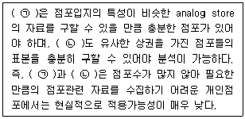
- ㉠ Huff모델, ㉡ MNL모델
- ㉠ 체크리스트법, ㉡ 소매중력모형
- ㉠ 유사점포법, ㉡ Huff모델
- ㉠ 유사점포법, ㉡ 회귀분석법
- ㉠ MNL모델, ㉡ 소매중력모형
(정답률: 52%)
27. 어떤 지역의 매력도를 평가할 때 측정하는 시장성장잠재력 지수(MEP)와 소매포화지수(IRS)에 대한 설명으로 옳지 않은 것은?
- 어떤 지역에서 특정 소매업종의 단위 매장면적당 잠재수요는 IRS로 알 수 있다.
- 점포가 초과 공급되어 매력적인 시장이 아닌 경우의 IRS는 낮게 나타난다.
- 현재 거주자의 지역외구매(outshopping)가 많으면 MEP가 작게 나타난다.
- 시장의 포화정도가 낮아 아직 경쟁이 치열하지 않으면 IRS가 높게 나타난다.
- 지역시장의 성장가능성을 추정할 수 있는 잠재력 측정지표로 MEP를 볼 수 있다.
(정답률: 37%)
28. '뉴턴의 만유인력'을 원용한 '소매인력법칙'을 제안한 사람으로 '두 도시의 중간에 위치하는 지역에 대하여 두 도시의 상권이 미치는 영향력의 범위는 두 도시의 크기에 비례하고 두 도시까지의 거리의 제곱에 반비례한다' 라고 주장한 사람은?
- 크리스탈러(W. Christaller)
- 컨버스(P. Converse)
- 애플바움(W. Applebaum)
- 허프(D. Huff)
- 레일리(W. J. Reilly)
(정답률: 60%)
29. 상권의 특성을 분석할 때 포함되는 내용이라고 보기 어려운 것은?
- 인구통계적 특성
- 경제적 상황분석
- 상권내 도로, 지하철 등 인프라에 대한 분석
- 유통산업의 추세분석
- 경쟁상황 분석
(정답률: 58%)
30. 점포의 입지의사결정이나 상권분석과 관련해서도 활용도가 높아지고 있는 지리정보시스템(GIS)과 관련한 내용으로 옳지 않은 것은?
- 주제도작성, 공간조회, 버퍼링(buffering)을 통해 효과적인 상권분석이 가능하다.
- 여러겹의 지도레이어를 활용하여 상권의 중첩(overlay)을 표현할 수 있다.
- 점포의 고객을 대상으로 gCRM을 실현하기 위한 기본적 틀을 제공할 수 있다.
- 지도레이어는 점, 선, 면을 포함하는 개별 지도형상으로 구성된다.
- 컴퓨터를 이용한 지도작성체계로 데이터베이스관리 체계와는 관련성이 없다.
(정답률: 71%)
31. 대규모점포와 중소유통업의 상생발전을 목적으로 대형마트 등에 대한 영업시간 제한과 의무휴업일 지정에 관한 내용을 규정하고 있는 법률은?
- 전통시장 및 상점가 육성을 위한 특별법
- 유통산업발전법
- 도·소매업진흥법
- 도시재정비 촉진을 위한 특별법
- 독점규제 및 공정거래에 관한 법률
(정답률: 43%)
32. 입지선정과정 중 점포의 부지평가과정에서 관련법규를 검토할 때 알아야 할 기본적 개념들이다. 그 내용이 옳지 않은 것은?(문제 오류로 가답안 발표시 5번으로 발표되었지만 확정답안 발표시 1, 5번이 정답처리 되었습니다. 여기서는 가답안인 5번을 누르시면 정답 처리 됩니다.)
- 용적률은 대지 내 건축물의 건축 바닥면적을 모두 합친 면적(연면적)의 대지면적에 대한 백분율이다.
- 건폐율은 대지면적에 대한 건축면적의 비율로 건축물의 과밀을 방지하고자 설정된다.
- 도시지역은 토지이용의 목적에 따라 주거지역, 상업지역, 공업지역, 녹지지역으로 구분된다.
- 상업지역은 중심상업지역, 일반상업지역, 근린상업지역, 유통상업지역으로 세분할 수 있다.
- 관련법률에서 허용하는 용적률의 기준은 상업지역의 유형에 따라 다르지만, 건폐율은 동일하다.
(정답률: 74%)
33. 점포의 입지조건 평가과정에서 유동인구 및 교통통행량 조사와 관련한 일반적 설명으로 가장 옳지 않은 것은?
- 유동인구의 동선은 일반적으로 출근동선 보다 퇴근동선을 중시해서 조사하는 것이 좋다.
- 유동인구의 조사시간은 특정시간보다 영업시간대를 고려하는 것이 좋다.
- 승용차, 버스, 화물차 등으로 차량의 유형을 구분하여 교통통행량을 분석하는 것이 좋다.
- 조사위치는 기본적으로 점포 앞보다는 점포에서 일정범위에 있는 여러 지점에서 하는 것이 더욱 바람직하다.
- 주중, 주말, 휴일 등을 구분해서 조사일정을 편성하는 것이 바람직하다.
(정답률: 50%)
34. A시의 인구는 12만명이고 B시의 인구는 3만명이다. 두 도시가 서로 30km의 거리에 떨어져 있는 경우, 두 도시간의 상권경계는 A시로부터 얼마나 떨어진 곳에 형성되는가? (Converse의 상권분기점 분석법을 이용해 계산하라.)
- 6km
- 7.5km
- 10km
- 20km
- 22.5km
(정답률: 43%)
35. 건물을 매입하여 출점하는 경우에 대한 설명으로 옳지 않은 것은?
- 초기 투자금액이 많이 소요될 수 있다.
- 영업활성화를 통해 자산가치 증식을 기대할 수 있다.
- 상권환경 변화에 대응하기가 어렵다.
- 안정적 영업을 지속할 수 있다.
- 영업이 부진할 경우 임대 등 다른 방법을 모색하기가 용이하다.
(정답률: 34%)
36. 점포의 인테리어 비용은 매몰비용(sunk cost)의 성격이 강한 고정비에 해당한다. 다른 모든 조건이 같다고 할 때, 다음 중 점포를 개설할 때 인테리어비용의 심각성이 가장 낮은 경우는?
- 업종 전환이 잦은 입지에 위치한 점포에 출점할 때
- 직접 소유한 점포에 출점할 때
- 계약기간을 정해서 임차한 점포에 출점할 때
- 합작하여 출점할 때
- 매각 후 매입자가 임대한 점포에 출점할 때
(정답률: 50%)
37. 넬슨(R. L. Nelson)은 점포입지의 성공적인 선정을 위해 적용할 수 있는 8개의 원칙을 제시했다. 상호보완관계에 있는 점포가 인접함으로써 고객 흡인력을 높이게 될 가능성을 검토해야 한다는 원칙은?
- 상권 잠재력의 원칙
- 성장가능성의 원칙
- 누적 흡인력의 원칙
- 양립성의 원칙
- 경쟁 회피성의 원칙
(정답률: 50%)
38. 공간균배의 원리에 의한 상점의 분류에 대한 내용으로 가장 옳지 않은 것은?
- 집심성 점포는 배후지의 중심지 입지가 유리한 상점이다.
- 집심성 점포로 분류되는 것에는 백화점, 대형서점 등을 들 수 있다.
- 집재성 점포로 분류되는 것에는 가구점, 기계점 등을 들 수 있다.
- 산재성 점포는 같은 업종이 좁은 지역에 서로 가까이 있어야 유리한 상점이다.
- 국부적 집중성 점포는 어떤 특정 지역에 같은 업종끼리 국부적 중심지에 입지해야 유리한 상점이다.
(정답률: 72%)
39. 선매품의 경우 점포의 상권 크기에 영향을 미치는 요인에 대한 설명으로 가장 옳지 않은 것은?
- 경쟁점포들이 인근에 많이 몰려있을수록 점포의 상권을 좁힌다.
- 취급상품이 다양할수록 점포의 상권은 넓어진다.
- 규모가 큰 점포일수록 더 넓은 상권을 가진다.
- 접근성이 좋을수록 점포의 상권이 넓어진다.
- 편의품점의 상권이 선매품점의 상권보다 더 좁다.
(정답률: 49%)
40. 전통적인 소매점 상권분석의 유용성에 관한 설명으로 가장 옳지 않은 것은?
- 전자상거래점포보다 유점포 소매점포의 경우에 더 유용하다.
- 모바일을 이용해 주로 판매되는 제품의 경우에는 거의 유용성이 없다.
- 거리의 영향을 가중하여 평가하는 상권분석은 편의품점에 더욱 적합하다.
- 점포에서 판매할 상품카테고리별로 판매를 예측하는데 유용하다.
- 편의품점보다는 전문품점의 경우에 유용성이 더 높다.
(정답률: 44%)
41. 상세권에 대한 설명으로 가장 옳은 것은?
- 집적된 점포들이 영업지역으로 설정한 공간적 범위이다.
- 집적된 점포들이 고객을 흡인할 수 있는 공간적 범위이다.
- 단일 점포가 표적으로 선정한 고객들이 거주하는 공간적 범위이다.
- 단일 점포가 입지한 지역 내에 고객들이 존재하는 시간적 범위이다.
- 단일 점포 또는 집적된 점포들이 포함된 행정단위의 공간적 범위이다.
(정답률: 43%)
42. 단일점포를 운영할 때와는 달리, 여러 소매점포를 체인화하는 과정에서는 모든 점포가 골고루 잘 운영되도록 하는 점포망 구성이 중요한 과제가 된다. 이러한 점포망 분석에 적용하기 가장 적절한 기법은?
- Huff모델
- 근접구역법
- 체크리스트법
- 입지할당모델
- 점포공간매출액비율법
(정답률: 44%)
43. 상권구획모형의 일종인 티센 다각형(Thiessen polygon)에 대한 설명으로 옳지 않은 것은?
- 최근접상가 선택가설에 근거하여 상권을 설정한다.
- 상권에 대한 기술적이고 예측적인 도구로 사용될 수 있다.
- 시설간 경쟁정도를 쉽게 파악할 수 있다.
- 티센 다각형의 크기는 경쟁수준과 비례한다.
- 하나의 상권을 하나의 매장에만 독점적으로 할당하는 방법이다.
(정답률: 36%)
44. 쇼핑센터 등 복합상업시설에서 사용하는 테넌트라는 용어와 같은 의미를 가지는 것은?
- 개발업자
- 임차점포
- 앵커스토어
- 트래픽풀러
- 공급업자
(정답률: 62%)
45. 입지분석시 입지주변의 업종을 조사하여 상호보완업종 또는 상호경합업종이 배치되어 있는지를 파악하여야 한다. 다음 중 상호경합업종이라고 볼 수 있는 것은?
- 의류점과 액세서리점
- 야채가게와 정육점
- 음식점과 카페
- 제과점과 화원
- 수퍼마켓과 잡화점
(정답률: 60%)
3과목: 유통마케팅
46. ( )안에 들어갈 알맞은 용어는?
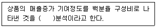
- 잠재 매출도
- 매출 공헌도
- 상품 생산성
- 당기 객단가
- 노동 생산성
(정답률: 73%)
47. 촉진믹스의 한 종류인 인적판매의 단점으로 가장 옳은 것은?
- 감성적인 판매가 어렵다.
- 고객별 전달정보의 차별화가 곤란하다.
- 경쟁사의 모방이 용이하여 촉진 효과가 짧다.
- 촉진의 속도가 느리며 비용이 과다하게 소요될 수 있다.
- 통제가 곤란하며 촉진의 효과를 측정하기 어렵다.
(정답률: 54%)
48. 소매점의 상품 진열에 대한 설명으로 옳지 않은 것은?
- 고객이 상품에 대한 호기심을 갖고 구매의욕을 불러일으킬 수 있도록 진열한다.
- 상품이 갖고 있는 색채와 소재 등을 올바르게 보여주기 위해 채광과 조명에 신경쓴다.
- 충동적 구매 대신 이성적인 구매를 유도하기 위해 다양한 POP광고물을 이용한다.
- 대부분의 소비자는 부담감이 없고 상품구색이 풍부한 점포에 관심을 기울인다.
- 점두에 진열된 상품은 그 자체가 큰 소구력을 가지므로 점두에 중점상품을 진열하여 고객을 유인한다.
(정답률: 69%)
49. 강제적 로열티(compulsive loyalty)에 대한 설명으로 가장 옳은 것은?
- 고객들의 인지적 또는 금전적 전환비용이 낮을 때 발생한다.
- 다수의 경쟁자가 존재하며 경쟁이 심화된 산업에서 발생한다.
- 고객이 서비스에 불만족하면 다른 서비스로의 전환을 위해 적극적인 탐색 행동을 보인다.
- 독점적인 기업의 서비스에서 나타나는 로열티 유형이다.
- 패밀리 레스토랑이나 커피전문점처럼 경쟁이 심한 서비스에서 볼 수 있는 로열티 형태이다.
(정답률: 52%)
50. 수직적 마케팅시스템에 대한 설명으로 가장 옳지 않은 것은?
- 생산자, 도매상, 소매상 등의 유통 구성원들이 하나의 통일된 시스템을 이루는 유통경로 체계이다.
- 상품이 생산되어 최종 소비자가 구매하기까지의 유통단계를 전문적으로 계획하고 관리할 수 있다.
- 유통 및 거래비용을 줄일 수 있다.
- 강력한 수직적 유통체계는 경쟁기업의 시장진입을 막는 역할을 할 수 있다.
- 각 유통 단계별로 나타나는 문제점을 신속하게 파악하여 시장의 변화에 빠르게 대응할 수 있다.
(정답률: 46%)
51. 매장에서 고객에게 상품을 효과적으로 진열하는 방식을 IP(Item Presentation), PP(Point of Presentation), VP(Visual Presentation)로 구분하였다. ㉠, ㉡, ㉢을 순서대로 올바르게 나열한 것은?
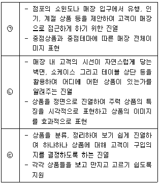
- ㉠ IP, ㉡ PP, ㉢ VP
- ㉠ IP, ㉡ VP, ㉢ PP
- ㉠ PP, ㉡ IP, ㉢ VP
- ㉠ VP, ㉡ IP, ㉢ PP
- ㉠ VP, ㉡ PP, ㉢ IP
(정답률: 54%)
52. 다음의 사례에 적용된 광고예산 결정방법은?
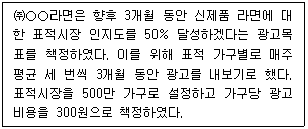
- 실험법
- 경쟁자 기준법
- 목표 과업법
- 가용예산 할당법
- 매출액 비율법
(정답률: 63%)
53. 판매촉진에 관한 설명으로 옳은 것은?
- 가격형 판매촉진은 장기간에 걸쳐 실행할 경우, 소비자의 자사 상표에 대한 선호도와 충성도를 강화할 수 있다.
- 판매촉진은 시장점유율이 큰 브랜드가 작은 브랜드보다 효과적이다.
- 잦은 가격할인은 소비자들의 가격민감도를 낮춘다.
- 잦은 가격할인은 브랜드 이미지에 별다른 영향을 미치지 않는다.
- 판매촉진기간 중 판매량 증가가 비구매집단으로부터 나온다면, 판매촉진으로 인하여 매출이 증가할 가능성이 높다.
(정답률: 43%)
54. 제품관리 및 서비스관리에 관한 설명으로 가장 옳지 않은 것은?
- 쇠퇴기에는 이익극대화를 위해 브랜드를 리뉴얼하고 취약상품의 보완에 힘쓴다.
- 핵심제품(core product/benefit)으로서의 화장품의 편익은 아름다움, 노화방지, 아토피 개선 등을 들 수 있다.
- 예약시스템 도입은 서비스의 소멸성 특성과 관련이 있다.
- 신제품 브랜드 전략에서 다른 종류의 신제품에 기존 브랜드를 이용하는 것은 카테고리확장(category extension)에 속한다.
- 성장기에는 브랜드를 강화하고 집약적 유통으로 확대한다.
(정답률: 51%)
55. 고객에게 신속하게 응대할 수 있도록 일선 판매원에게 권한을 이양하려면 마케팅 성과 및 평가방법도 변화해야 한다. 이에 따른 마케팅 통제에 대한 설명으로 옳지 않은 것은?
- 사후통제 대신 사전통제의 비중을 높인다.
- 예방통제에 대한 의존도를 높인다.
- 적합한 판매원의 선발과 교육을 더 강조한다.
- 판매원에 대한 일상적 관리감독을 더 강화한다.
- 바람직한 조직문화를 형성하고 활용한다.
(정답률: 48%)
56. 성장전략에 대한 설명으로 옳은 것을 모두 나열한 것은?
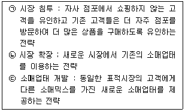
- ㉠
- ㉠, ㉡
- ㉠, ㉢
- ㉡, ㉢
- ㉠, ㉡, ㉢
(정답률: 45%)
57. 서비스업체들의 포지셔닝 전략과 그에 따른 내용으로 옳지 않은 것은?
- 서비스용도 : A헬스클럽은 다이어트 여성 고객을 대상으로 '여성 전용 다이어트 전문 클럽'으로 포지셔닝함
- 신뢰성 : B택배업체는 '반드시 24시간이내 배달'로 포지셔닝함
- 확신성 : C대학병원은 '우리 병원에 여러분의 건강을 맡기십시요'라고 포지셔닝함
- 서비스 속성 : D커피는 '이탈리안 커피하면 D커피'라고 포지셔닝함
- 서비스 경쟁자 : E피자는 '정통 수제 화덕 피자 레스토랑'이라고 포지셔닝함
(정답률: 53%)
58. 공급업체와 유통업체가 장기적 협력관계를 구축하려고 할 경우, 공급업체가 유통업체를 평가하는 기준을 모두 고르면?
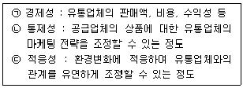
- ㉠
- ㉠, ㉡
- ㉠, ㉢
- ㉡, ㉢
- ㉠, ㉡, ㉢
(정답률: 64%)
59. 다음 글 상자 안의 A대형마트가 사용한 전략은?
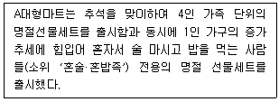
- 캐즘 전략
- 원가우위전략
- 집중화 전략
- 차별적 마케팅 전략
- 포지셔닝 전략
(정답률: 58%)
60. 제조업체의 브랜드를 부착하고 있으면서 특정 유통업체에게만 공급되어 판매되는 상품을 무엇이라 하는가?
- 제네릭 브랜드(Generic Brand) 상품
- 스토어 브랜드(Store Brand) 상품
- 유통업체 브랜드(Private Brand) 상품
- 제조업체,유통업체 연합 브랜드(Private National Brand) 상품
- 노 브랜드(No Brand) 상품
(정답률: 59%)
61. 전문점에 가장 적합한 상품구성 방식은?
- 좁고 깊은 구성방식
- 넓고 깊은 구성방식
- 무작위 구성방식
- 좁고 얕은 구성방식
- 넓고 얕은 구성방식
(정답률: 68%)
62. 소비자 구매행동을 기준으로 한 카테고리 유형 중에서 상품구색을 가장 완벽하게 갖출 필요가 있는 것은?
- 기본 생필품
- 일회성 구매 상품
- 계절수요 구매상품
- 전문품
- 주기적 반복구매 상품
(정답률: 31%)
63. 유통업체 브랜드(PB)에 대한 설명으로 가장 옳지 않은 것은?
- 유통업체의 독자적인 브랜드명, 로고, 포장을 갖는다.
- 유통업체는 PB를 통해 점포 충성도를 증가시킬 수 있다.
- 대형마트, 편의점 등에서 PB의 비중을 증가시키고 있다.
- 대규모 생산과 대중매체를 통한 광범위한 광고 진행이 일반적이다.
- 중간마진폭을 제거하여 추가 이윤을 남길 수 있다.
(정답률: 65%)
64. 유통기능을 거래의 성사를 촉진하는 상적 기능과 성사된 거래를 이행하는 물적 기능으로 구분한다면, 다음 중 물적 기능에 해당하는 것은?
- 배달
- 상품등급화
- 머천다이징
- 가격조정
- 촉진
(정답률: 68%)
65. 투사기법(projective technique)은 응답자 자신의 행동을 직접 설명하게 하기보다는 다른 사람의 행동을 해석하게 하여 응답자의 동기, 신념, 태도 등을 간접적으로 파악하려는 기법이다. 다음 중 투사기법에 해당되지 않는 것은?
- 단어 연상(word association)
- 문장 완성(sentence completion)
- 그림 응답(picture response)
- 사다리 기법(laddering)
- 역할 연기(role playing)
(정답률: 54%)
66. 본래 계획한 판매가격과 실제 판매가격의 차이를 의미하며 할인, 특별 할인, 결손의 형태로 나타나는 것을 의미하는 용어로 옳은 것은?
- 마크다운(Markdown)
- 할인(Discounts)
- 감모(Reductions)
- 마크업(Markup)
- 손실(Loss)
(정답률: 32%)
67. 제품의 수요예측을 위한 방법으로 가장 옳지 않은 것은?
- 델파이 조사법
- 사례유추법
- 시계열분석방법
- 확산모형방법
- 레일리(Reily) 법칙분석
(정답률: 37%)
68. 도매상 중에서 '회전이 빠른 한정된 계열의 상품을 소규모 소매상들에게 현금지불조건으로 판매하며 배달 등의 서비스를 수행하지 않는 도매상'을 일컫는 말은?
- 산업분배업자(industrial distributor)
- 트럭도매상(truck jobber)
- 직송도매상(drop shipper)
- 진열 도매상(rack jobber)
- 현금거래 도매상(cash and carry wholesaler)
(정답률: 65%)
69. 만일 특정 제조업체가 도매상을 거쳐 소매상에게 유통하는 구조이고, 도매상이 3개, 소매상이 10개일 경우, 총 거래의 수는 몇 개인가?
- 13
- 14
- 20
- 30
- 33
(정답률: 29%)
70. 도매상의 기능을 '제조업자를 위한 도매상의 기능'과 '소매상을 위한 도매상의 기능'으로 구분할 때, 다음 중 성격이 다른 하나는?
- 시장정보제공
- 시장확대
- 신용 및 금융기능
- 재고유지
- 주문처리
(정답률: 30%)
4과목: 유통정보
71. ( )안에 들어갈 용어로 가장 옳은 것은?
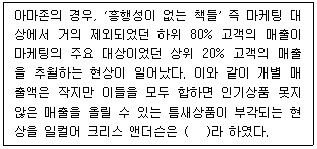
- 파레토 법칙
- 무어 법칙
- 멧칼프 법칙
- 롱테일 법칙
- 파킨슨 법칙
(정답률: 52%)
72. 다음 내용에 공통으로 적용되는 가장 적절한 기술은?
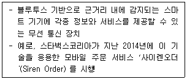
- 딥러닝
- 옴니채널
- 핀테크
- NFC
- 비콘
(정답률: 39%)
73. 정보보호 및 보안 인증과 관련된 내용이다. ( ㉠ ), ( ㉡ ), ( ㉢ )안에 들어갈 용어로 가장 옳은 것은?
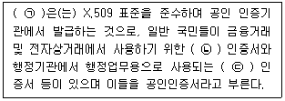
- ㉠ 전자서명, ㉡ NPKI, ㉢ GPKI
- ㉠ 보안카드, ㉡ 보안SMS, ㉢ GPKI
- ㉠ 보안카드, ㉡ Sync, ㉢ Async
- ㉠ 공개키 인증서, ㉡ Sync, ㉢ Async
- ㉠ 공개키 인증서, ㉡ NPKI, ㉢ GPKI
(정답률: 44%)
74. 전통적인 CRM과 소셜 CRM의 상대적 차이점을 비교한 것으로 가장 옳지 않은 것은?
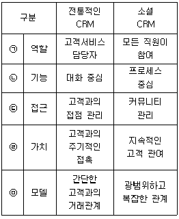
- ㉠
- ㉡
- ㉢
- ㉣
- ㉤
(정답률: 41%)
75. 마이클 포터 교수가 기업의 경쟁전략으로 제시한 비용우위 전략, 차별화 전략 및 집중화 전략 중 비용우위 전략 관련 활동에 해당하지 않는 것은?
- 생산성 저해 요소 제거
- 불필요한 자원의 낭비 요소 제거
- 제품의 생산 원가 절감
- 제품의 무상 서비스 기간 연장
- 중복기능 제거를 위한 경영혁신 활동 수행
(정답률: 58%)
76. Hammer & Champy(1993)이 제시한 경영혁신을 위해 정보기술을 이용한 BPR(Business Process Reengineering)을 실시할 때 고려해야 할 사항으로 가장 옳지 않은 것은?
- 단순한 과업단위를 떠나 목표나 결과중심으로 업무를 설계하여야 한다.
- 정보발생부서에서 정보처리도 함께 수행하여 중복된 자료입력 및 작성을 피하여야 한다.
- 지역적으로 분산되어 있는 자원이라도 중앙에 모여 있는 것처럼 취급하여야 한다.
- 정보는 실시간이 아니라 필요할 때만 통합하여 파악하여야 한다.
- 병행처리 업무는 결과의 통합이 아닌 처리과정 중에 조정하여야 한다.
(정답률: 66%)
77. ( )안에 들어갈 용어로 가장 옳은 것은?
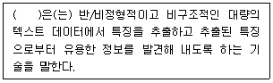
- 데이터 마트(Data Mart)
- 데이터 마이닝(Data Mining)
- 텍스트 마이닝(Text Mining)
- 오피니언 마이닝(Opinion Mining)
- 데이터 웨어하우스(Data Warehouse)
(정답률: 37%)
78. 데이터베이스에 저장된 데이터가 갖추어야 할 특성으로 가장 옳지 않은 것은?
- 표준화
- 논리성
- 중복성
- 안정성
- 일관성
(정답률: 66%)
79. QR코드의 특징으로 가장 옳지 않은 것은?
- 작은 공간에 대용량의 정보 저장(표현)이 가능하다.
- 장애물 및 방향에 따라 정보 인식이 불가능할 수 있다.
- 데이터의 오류 정정이 쉽다.
- 부분적 손상에도 쉽게 복원이 가능하다.
- 별도의 인식장치 없이 스마트폰을 인식장치로 사용할 수 있다.
(정답률: 57%)
80. 디지털 경제 성장 과정에서 나타나는 주요 변화로 가장 옳지 않은 것은?
- 인터넷을 통한 정보전달 속도 증대
- 고객에 대한 서비스의 효율성 증대
- 인터넷을 통한 콘텐츠 전송 증대
- 인터넷을 통한 물리적 제품의 소매 거래 감소
- 영업 및 마케팅 비용 감소
(정답률: 67%)
81. 고객관계관리를 위해 고객이 웹을 이용하는 동안 방문한 사이트, 사이트에 머문 시간, 열람한 광고, 구매한 상품 등의 정보를 기록하고 관리하는 모니터링 기술은?
- 웜
- 스파이웨어
- 클릭스트림
- 소프트웨어키로거
- 하드웨어키로거
(정답률: 53%)
82. 지식경영시스템의 역할로 가장 옳지 않은 것은?
- 조직 내 구성원들의 지식을 집약하고, 이를 바탕으로 새로운 지식 창출을 유도한다.
- 조직 내 구성원들을 지식화시켜 기업의 잠재적 경쟁력을 향상시킨다.
- 지식을 XML 데이터 형태로 저장함으로써 비즈니스간 데이터 교환비용을 절감해준다.
- 구성원 간의 지식개인화를 강화하여 푸시(push)솔루션을 통해 가장 빠른 지식유통망을 확보해준다.
- 기존 시스템의 데이터, 이메일, 파일시스템, 웹 사이트 등 외부지식을 유기적으로 통합하여 기업지식의 기반을 확대해 준다.
(정답률: 61%)
83. 다음 사례에 적용되는 의사결정의 오류로 가장 적합한 것은?
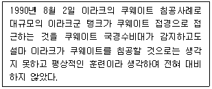
- 정박효과 (anchoring effect)
- 최빈효과 (recent effect)
- 몰입상승효과 (escalation effect)
- 연상편견 (associative bias)
- 표현의 차이 (poor framing)
(정답률: 37%)
84. 인터넷 상표를 기술적으로 정의하면 도메인 이름을 의미할 수 있는데, 이러한 도메인 이름을 선정할 경우 고려해야 할 요소로 가장 옳지 않은 것은?
- 기억하기 쉬운 형태로 되어야 한다.
- 고객의 주목을 끌 수 있는 독특한 것이어야 한다.
- 제공하는 콘텐츠의 특징을 잘 전달할 수 있어야 한다.
- 의미를 전달할 수 있도록 가능한 길게 표현할 수 있어야 한다.
- 도메인을 사용할 고객의 입장에서 생각해야 한다.
(정답률: 71%)
85. EPC에는 사용 목적에 따라 코드 유형이 정의되어 있는데, 다음 중 거래단품에 사용되는 EPC 관련 코드로 가장 옳은 것은?
- SSCC
- GSRN
- GTIN
- GDTI
- GIAI
(정답률: 52%)
86. ( ) 안에 들어갈 용어로 가장 옳은 것은?
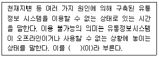
- 아웃콘트롤타임
- 다운타임
- 반응시간
- 리시브타임
- 타임아웃
(정답률: 35%)
87. 효과적인 전자상거래 사이트의 고객서비스를 위해 충족되어야 할 필수적 요소로 가장 옳지 않은 것은?
- 내비게이션 및 디자인이 단순해야 하고, 웹페이지가 최대한 빠르게 나타나야 한다.
- 이메일 문의에 신속하게 응답하고, 수신자부담(080)의 고객지원 전화번호를 사이트에 표시하며, 고객지원 담당자는 온라인상에서만 고객의 구매과정을 도아주어야 한다.
- 제품설명, 스펙, 가격 등의 제품관련 정보를 제공함과 동시에, 번들링, 스마트 쇼핑카트, 교차판매 등과 같은 고급기능을 통해 구매를 용이하게 하여야 한다.
- 할인쿠폰, 반품시 환불, 신속한 제품배송, 무료 택배 등의 인센티브를 제공하여야 한다.
- 안전한 거래에 대한 확신을 제공하고, 수집된 데이터의 프라이버시 관리에 관한 안내를 게시하며, 회사 로고표시를 통해 브랜드 정체성을 구축함으로써 전자상거래 사이트에 대한 고객의 신뢰를 구축하는 노력이 필요하다.
(정답률: 59%)
88. ( )안에 들어갈 용어로 옳은 것은?
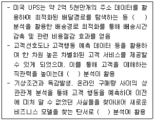
- 군집분석
- 센싱데이터
- 다변량통계
- 기술통계
- 빅데이터
(정답률: 68%)
89. 인트라넷의 특징으로 가장 옳지 않은 것은?
- 어떠한 조직 내에 속해 있는 사설 네트워크
- 조직의 정보와 컴퓨팅 자원을 구성원들 간에 서로 공유
- 개인별 사용자 ID와 암호를 부여하여 인증되지 않은 사용자로부터의 접근 방지
- 고객이나 협력사, 공급사와 같은 회사 외부사람들에게 네트워크 접근 허용
- 공중 인터넷에 접속할 때는 방화벽 서버를 통과
(정답률: 63%)
90. 지식경영시스템의 효과로 가장 옳지 않은 것은?
- 시장정보의 축적, 제품/서비스 향상, 지식의 활용성 증대, 그리고 지식의 공유 등을 통해 기업의 경쟁력을 강화할 수 있다.
- 공간과 시간을 뛰어넘는 Brick and Mortar 유형의 기업 기반이 될 수 있다.
- 지식공유가 활성화됨에 따라 사내 전문가 그룹이 형성되고 관심 분야 토론 등을 통한 새로운 지식의 창조능력이 증대된다.
- 지식베이스를 중심으로 축적된 지적 자산이 기업의 자산평가에 반영되어야 할 핵심 무형 자산이 된다.
- 학습효과의 향상, 지속적인 지식창조활동 등을 통한 조직의 지식능력을 높일 수 있다.
(정답률: 49%)